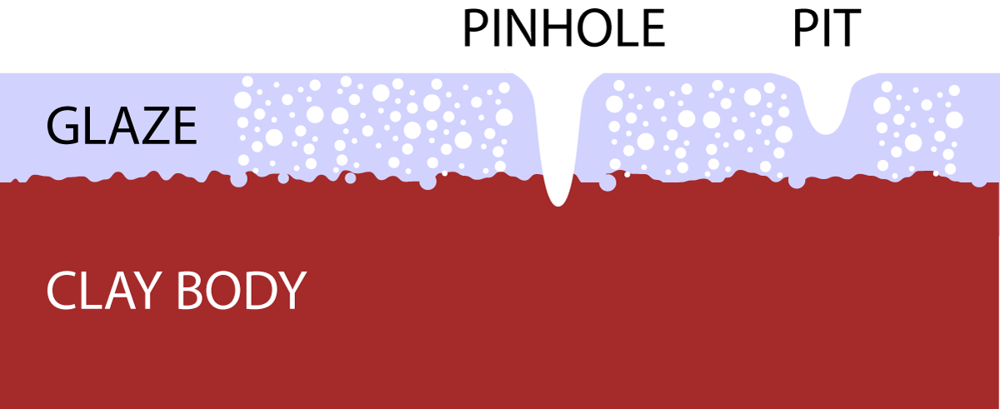
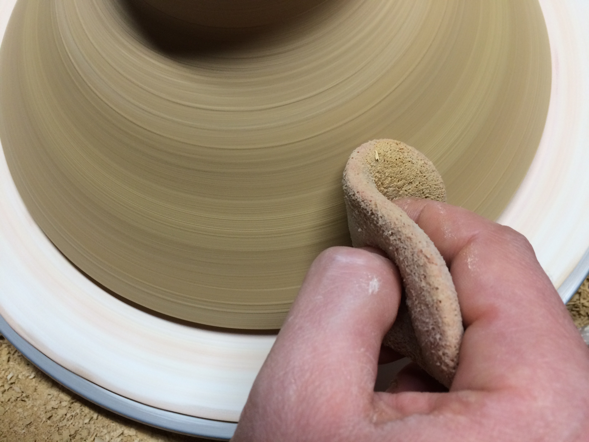
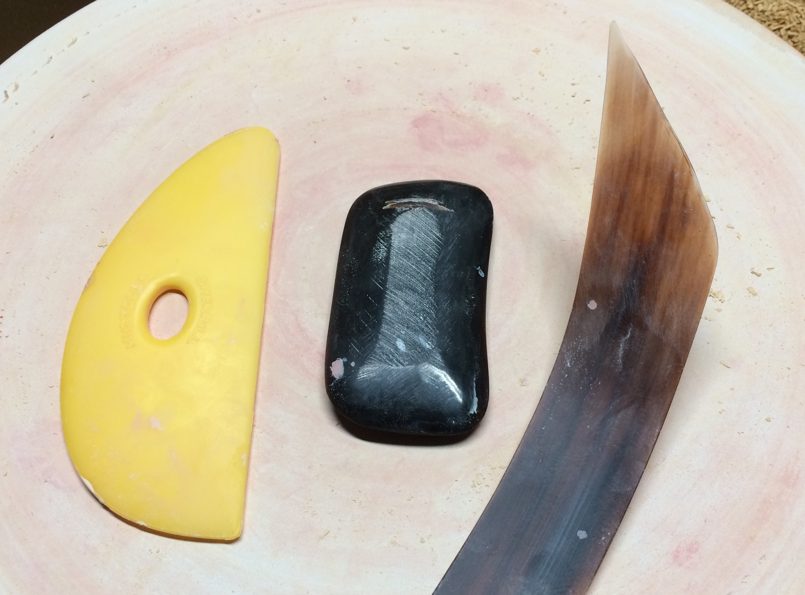
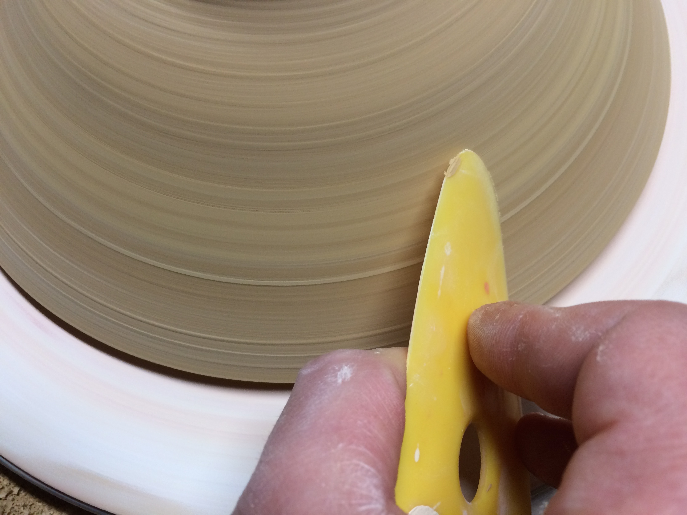
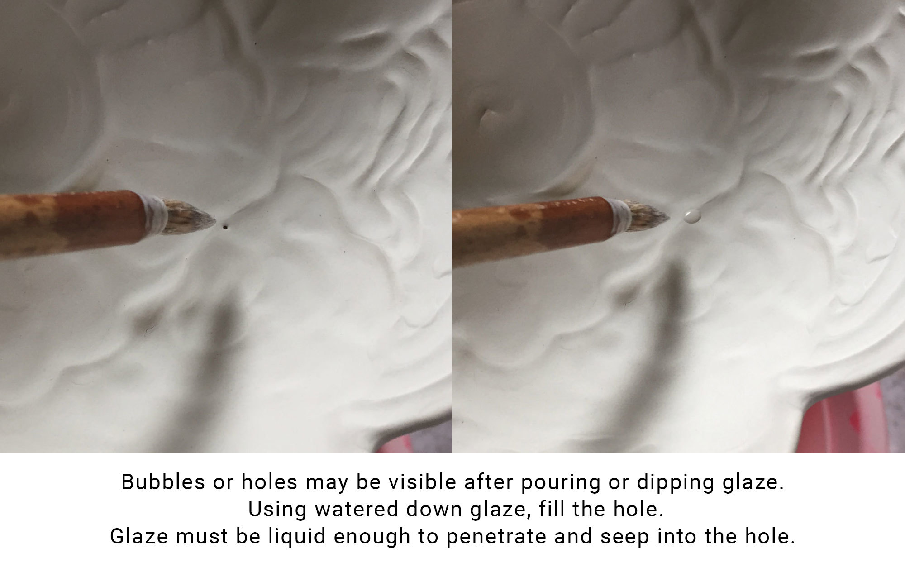
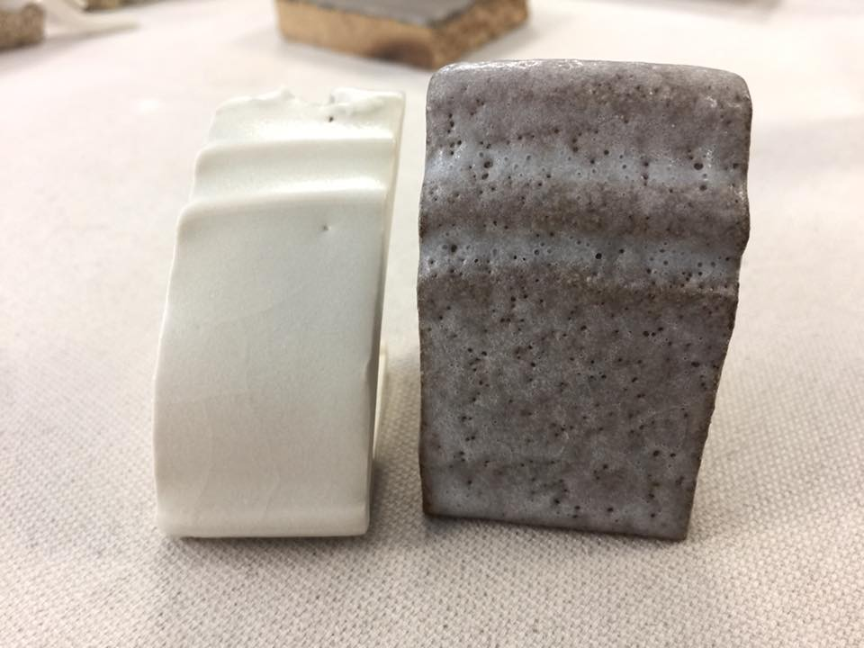
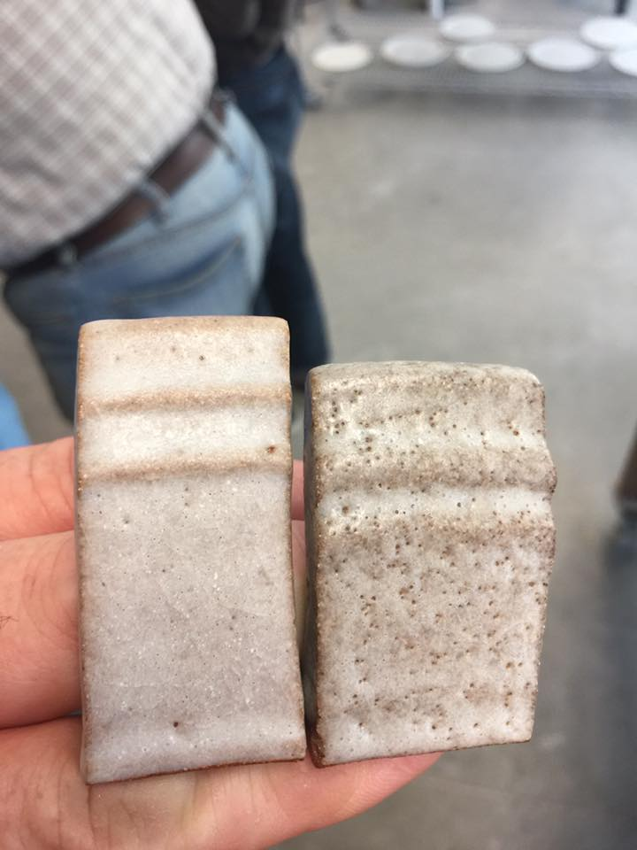
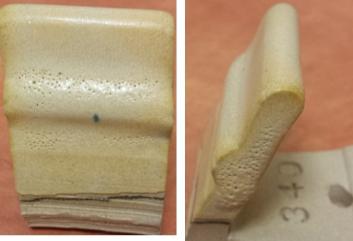

This is a Wiki-style entry, you can edit it!
What is Pinholing?
‘Pinholes’ are small holes in the fired glaze surface possibly penetrating down to the body below. ‘Pits’ are smaller, they mar the surface of the glaze. Pinholes or pits are often no larger than the head of a pin but can very in size. During the firing, air pockets are trapped in the melting process.These pockets form bubbles in the glaze that can swell until the break the surface. The causes of pinholes is still understudy, and is not clearly defined. Work done by David Finklnburg (MS Thesis, Alfred University 2006) postulates that the air of negative space in an applied glaze (aka Pore Space Vapor) is the source of the bubbles/pinholes. As the air is trapped by the melting of the glaze, which forms into bubbles which can swell and pop as the glaze melts.
Pinholes vs. Pits
David Finkelnburg:
A pinhole is a glaze fault extending after firing from the clay body to the glaze surface. Any hole from the surface not reaching the body is simply a pit. Both may be caused by a gas bubble within the molten glaze bursting at the glaze surface. “The cause…” I’m not sure that’s what I postulated, more like pore space CAN be a cause. I’m pretty certain there’s more than one cause. If pore space is a source, burnishing reduces pore spaces directly under the glaze. On the other hand, trimming a groggy body has the opposite effect, and in my observation seems to promote pinholes.

Possible Solutions to Pinholing
BURNISHING
Some have noted that burnishing the clay after trimming helps to reduce pinholing. This burnishing can be done by simply sponging the pot on a wheel when dry, or sponging after trimming and then burnishing the pot.



TERRA SIGELLATA
At low temperatures, cone 06 to perhaps cone 01 some potters dip trimmed areas in terra sigellata. This accomplishes two things. It partially seals the foot slowing moisture absorption, and it cuts down pinhole over the trimmed areas. Pinholes on lowfired ware are especially problematic in majolica glazes.
HIGHER BISQUE TEMP
It’s suggested that bisque to a higher temperature in a clean oxidation atmosphere helps reduce pinholing. The bisque temperature is recommended to be at least c06, possibly even higher to c04. A short soak at the peak temperature may also help. It is important that all combustibles in the clay body are fired out during the bisque period. A hold at bisque temperature (approximately c06) during the glaze firing may also help.
GLAZE APPLICATION
- When glazing the inside and outside at the same time, absorbed water displaces air in the porous bisque…this trapped air can form air bubbles that can form pinholes in glaze firing
One possible solution for this is to rinse and wipe the bisque, let it sit for an hour before glazing …this leaves some water displacing air in the center of of the wall, thus leaving less air to be displaced and trapped when glazing the wall on both sides at the same time - Rub down pin holes that are visible after you have applied the glaze, or fill in larger holes with watered-down glaze.

From Matthew Katz
Lots of new things to share from my latest workshop at Sierra Nevada College. I’ve been teaching for years that pin-holing is an application issue, and has nothing to do with gas release. This is all The same glaze. On porcelain one pinhole but on the first stoneware test, crazy pinholes. On the second stoneware test the tile was throughly dried after washing, before application. And the student admitted that they washed the test tile for the first sample, right before application. When applied to a dried tile, the pin-holing was radically reduced.
1 glaze, 2 bodies. The tiles on the right in both pics are the same tile, on stoneware. The left pic, left tile is a porcelain. The right pick left tile is the same stoneware as pin-holing sample. But the stoneware was washed and throughly dried, before application. The pin-holed tile was washed but not fully dried before application.


OVERFIRING CLAY
In some instances, over-firing a clay body may lead to pinholes. Try firing to a slightly lower temperature to see if pinholes can be reduced, or switch clay bodies.
INCREASING GLAZE MELT
It has been suggested that pinholes are usually less prevalent on vertical surfaces vs. horizontal ones. This is because the glaze is fluid enough to run down the side of the clay, healing over pinholes. If you notice this to be the case, you can try to increase the glaze melt by adding more flux.
GLAZE FIRING SOAK
It is possible that a firing slower to peak temperature or holding at peak temperature during the glaze firing will help to heal over pinholes. A 15 to 30 minute soak should help.
Drop and soak
After soaking on peak temp about 15-30 min. and then dropping temp. for about 40°C and soak again for about 30 min. can be very helpful in eliminating pinholes.
External Links:
- Digitalfire: Glaze Pinholing, Pitting
- Lakeside Pottery: Glaze Pinholing and Pitting
- Preventing Pinholes, Blisters, Craters, and Bubbles Notes the use of a clean bisque to help eliminate pinholes.
Pictures

Pinholing image by Sue McLeod